Set some env vars we need
Sys.setenv("AWS_NO_SIGN_REQUEST" = "YES")
Sys.setenv("AWS_S3_ENDPOINT" = "projects.pawsey.org.au")
Sys.setenv("AWS_VIRTUAL_HOSTING" = "FALSE")
library(sooty.watch)
watch_curated()
#> # A tibble: 7 × 4
#> Dataset mindate maxdate n
#> <chr> <dttm> <dttm> <int>
#> 1 SEALEVEL_GLO_PHY_L4 1993-01-01 00:00:00 2025-02-16 00:00:00 11621
#> 2 oisst-avhrr-v02r01 1981-09-01 00:00:00 2025-02-15 00:00:00 15874
#> 3 ghrsst-tif 2002-06-01 00:00:00 2025-02-14 00:00:00 3435
#> 4 oisst-tif 1981-09-01 00:00:00 2025-02-14 00:00:00 15873
#> 5 NSIDC_SEAICE_PS_N25km 1978-10-26 00:00:00 2025-02-13 00:00:00 16907
#> 6 NSIDC_SEAICE_PS_S25km 1978-10-26 00:00:00 2025-02-13 00:00:00 16907
#> 7 antarctica-amsr2-asi-s3125-tif 2012-07-02 00:00:00 2025-02-11 00:00:00 4597
watch_buckets()
#> # A tibble: 7 × 2
#> Bucket n
#> <chr> <int>
#> 1 idea-10.5067-mpyg15waa4wx 33814
#> 2 idea-10.7289-v5sq8xb5 15874
#> 3 idea-oisst 15873
#> 4 idea-sealevel-glo-phy-l4-rep-observations-008-047 11208
#> 5 idea-amsr2-asi-s3125 4597
#> 6 idea-ghrsst 3435
#> 7 idea-sealevel-glo-phy-l4-nrt-008-046 413For each dataset, let’s get the first and last and plot.
library(dplyr)
datasets <- group_by(sooty::sooty_files(), Dataset)
th <- function(x, ...) rbind(head(x, 1L), tail(x, 1L))
read1 <- function(x) {
out <- terra::rast(x)[[1]]
names(out) <- substr(names(out), 1, 24)
out
}
plotfun <- function(x) {
plot(x[[1]], main = format(time(x[[1]]))); plot(x[[2]], main = format(time(x[[2]])))
}
library(terra)
#> terra 1.8.21
ctch <- dplyr::group_map(datasets, \(.x, ...) try(plotfun(lapply(th(.x)$source, read1))))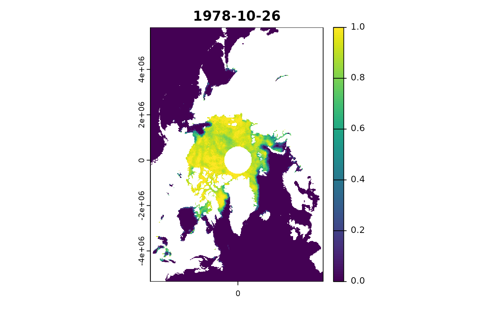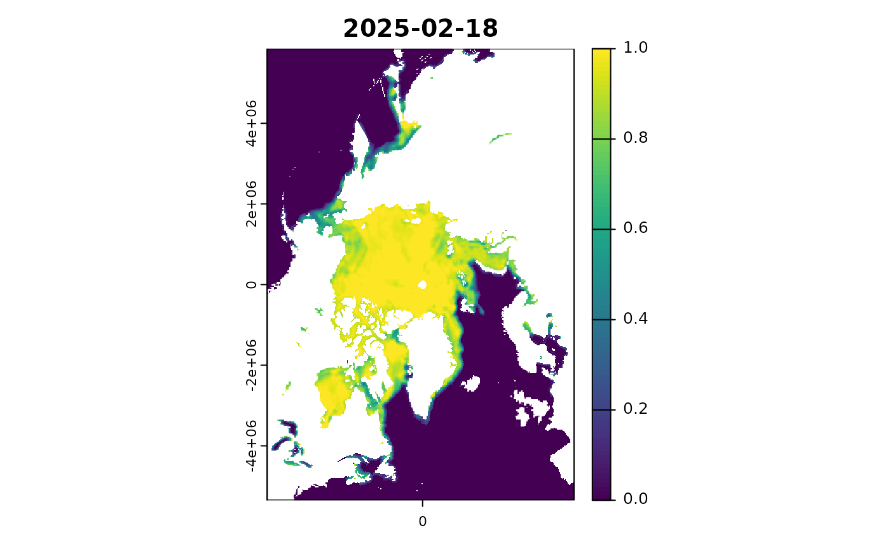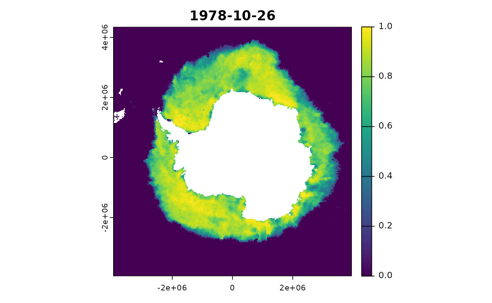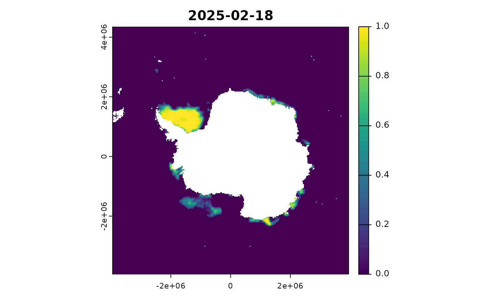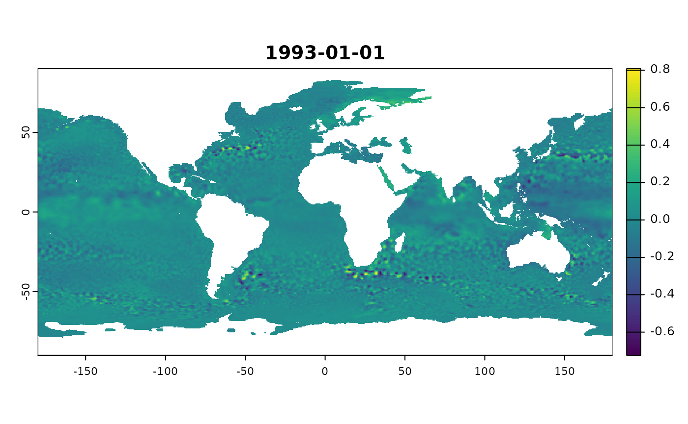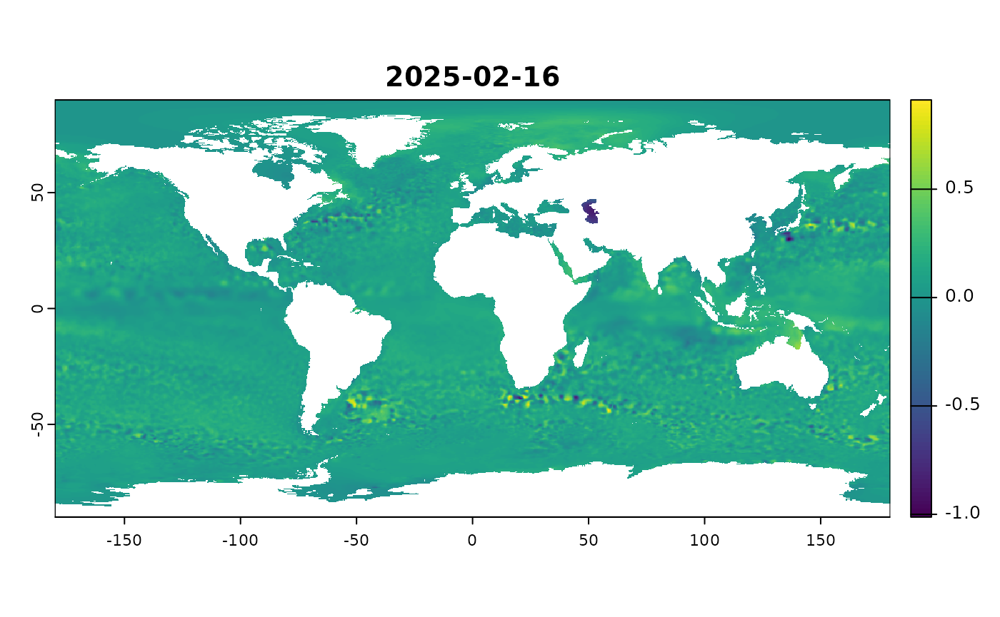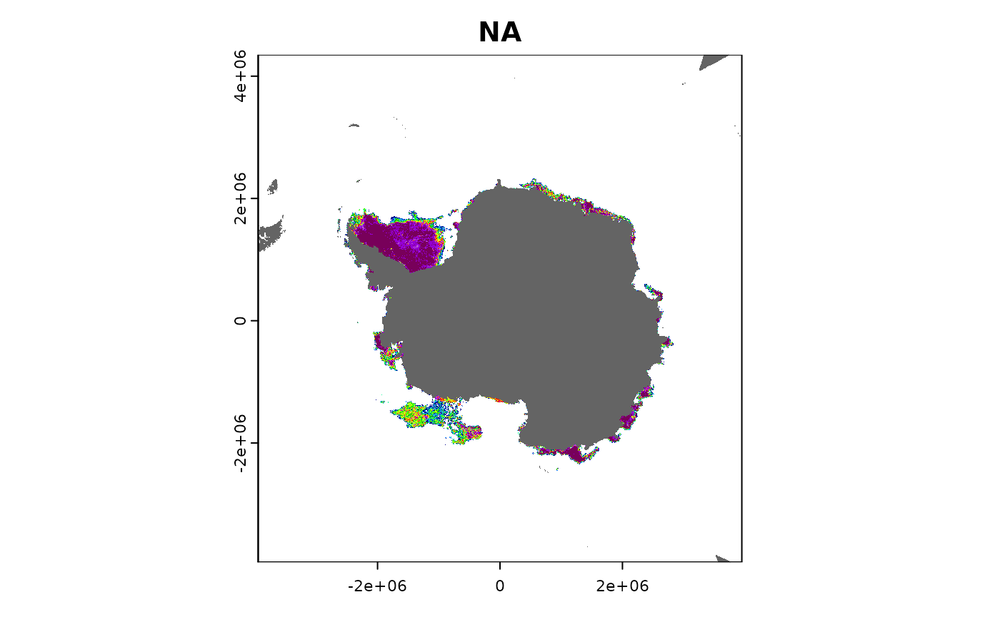 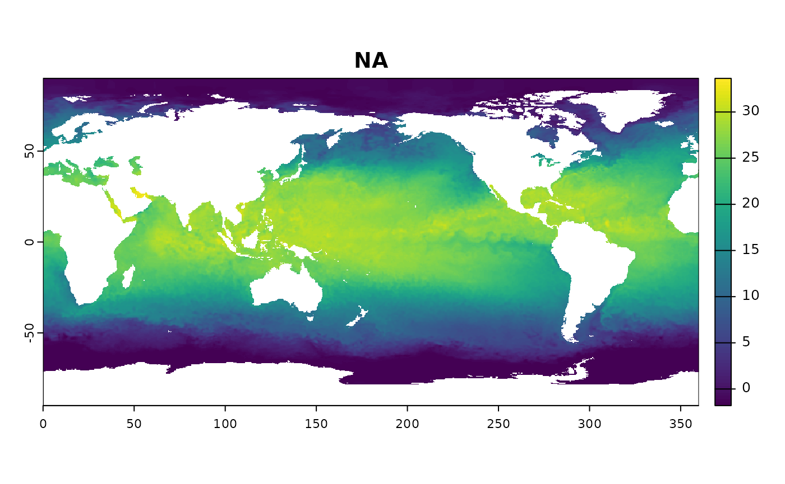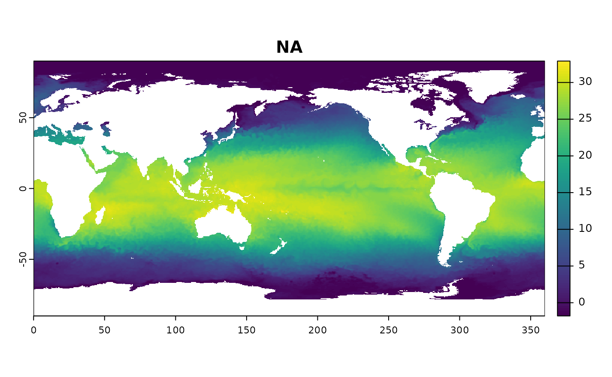
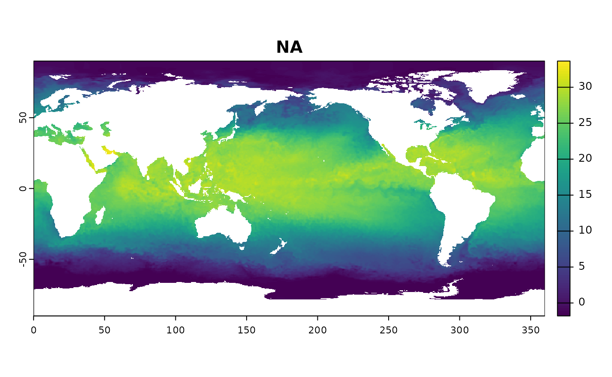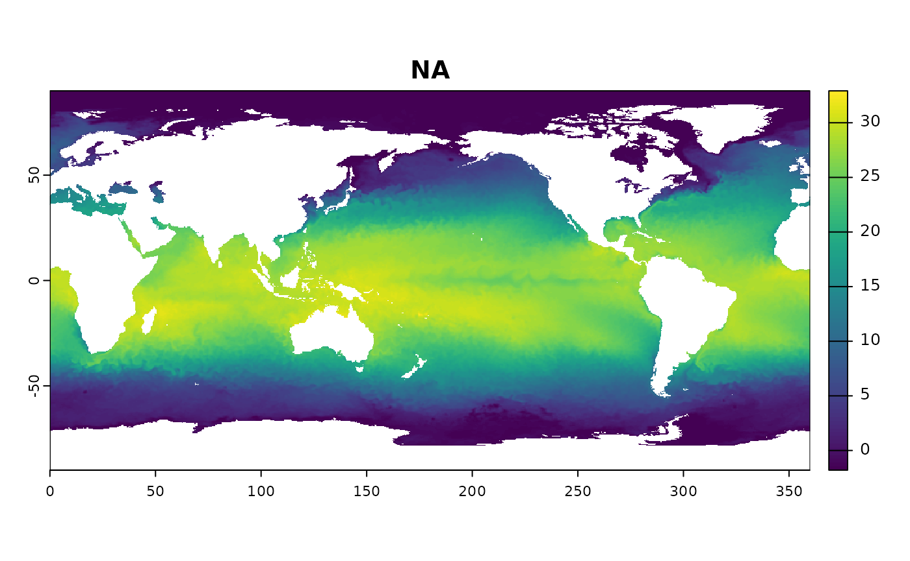